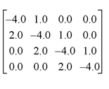

The TRISOL function solves tridiagonal systems of linear equations that have the form: A T U = R
Note: Because IDL subscripts are in column-row order, the equation above is written A T U = R rather than AU = R. The result U is a vector of length n whose type is identical to A .
TRISOL is based on the routine tridag described in section 2.4 of Numerical Recipes in C: The Art of Scientific Computing (Second Edition), published by Cambridge University Press, and is used by permission.
Note: If you are working with complex inputs, use the LA_TRISOL procedure instead.
Result = TRISOL( A , B , C , R [, / DOUBLE ] )
Returns a vector containing the solutions.
A vector of length n containing the n -1 sub-diagonal elements of A T . The first element of A , A 0 , is ignored.
An n -element vector containing the main diagonal elements of A T .
An n -element vector containing the n -1 super-diagonal elements of A T . The last element of C , C n-1 , is ignored.
An n -element vector containing the right hand side of the linear system A T U = R.
Set this keyword to force the computation to be done in double-precision arithmetic.
To solve a tridiagonal linear system, begin with an array representing a real tridiagonal linear system. (Note that only three vectors need be specified; there is no need to enter the entire array shown.)

; Define a vector A containing the sub-diagonal elements with a
; leading 0.0 element:
A = [0.0, 2.0, 2.0, 2.0]
; Define B containing the main diagonal elements:
B = [-4.0, -4.0, -4.0, -4.0]
; Define C containing the super-diagonal elements with a trailing
; 0.0 element:
C = [1.0, 1.0, 1.0, 0.0]
; Define the right-hand side vector:
R = [6.0, -8.0, -5.0, 8.0]
; Compute the solution and print:
result = TRISOL(A, B, C, R)
PRINT, result
IDL prints:
-1.00000 2.00000 2.00000 -1.00000
The exact solution vector is [-1.0, 2.0, 2.0, -1.0].
|
4.0 |
Introduced |
CRAMER , GS_ITER , LA_TRISOL , LU_COMPLEX , CHOLSOL , LUSOL , SVSOL , TRISOL